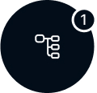

Häufig gestellte Fragen
Entdecke Antworten auf die häufigsten Fragen rund um den Job als Chat-Operator und erfahre mehr über die Qualifikationen, Vergütung und Arbeitsbedingungen.

Bewerbung
Fülle unser unkompliziertes Bewerbungsformular aus, um den ersten Schritt in Richtung deiner neuen Karriere als Chat-Operator zu machen.
Identitätsprüfung
Wir überprüfen deine Identität, um sicherzustellen, dass du mindestens 18 Jahre alt bist und berechtigt bist, als Chat-Operator zu arbeiten.

Online Training
Profitiere von unserem umfassenden Online-Training, das dich optimal auf deine Rolle als Chat-Operator vorbereitet.